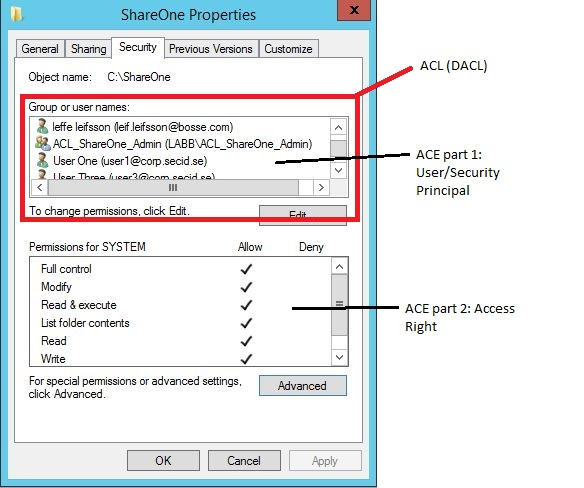
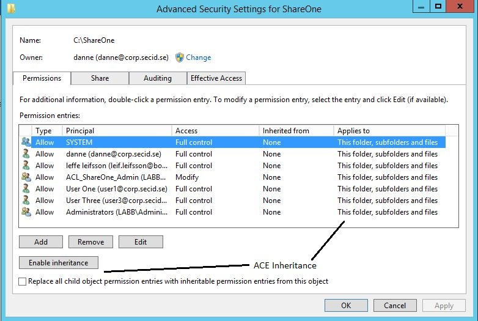
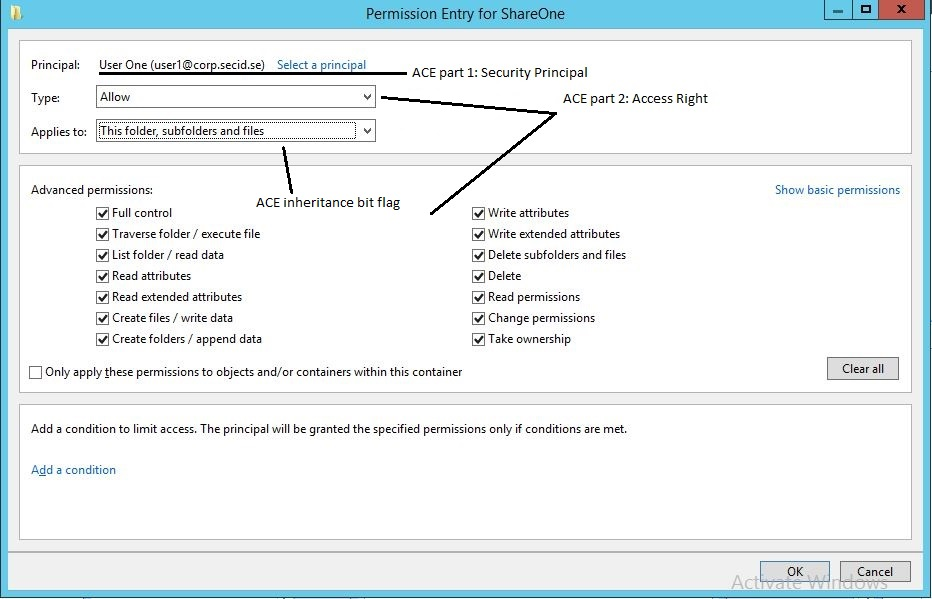
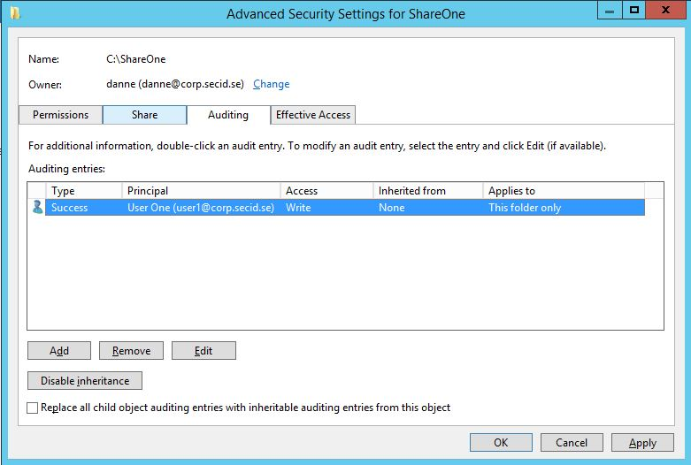

ACLs - DACLs/SACLs/ACEs
.png)
使用 Trickest 轻松构建和 自动化工作流程，由世界上 最先进 的社区工具提供支持。
立即获取访问权限：
{% embed url="https://trickest.com/?utm_source=hacktricks&utm_medium=banner&utm_campaign=ppc&utm_content=acls-dacls-sacls-aces" %}
{% hint style="success" %}
学习和实践 AWS 黑客技术： HackTricks 培训 AWS 红队专家 (ARTE)
HackTricks 培训 AWS 红队专家 (ARTE)
学习和实践 GCP 黑客技术：  HackTricks 培训 GCP 红队专家 (GRTE)
HackTricks 培训 GCP 红队专家 (GRTE)
支持 HackTricks
- 查看 订阅计划!
- 加入 💬 Discord 群组 或 Telegram 群组 或 在 Twitter 🐦 @hacktricks_live** 上关注我们。**
- 通过向 HackTricks 和 HackTricks Cloud GitHub 仓库提交 PR 来分享黑客技巧。
访问控制列表 (ACL)
访问控制列表 (ACL) 由一组有序的访问控制条目 (ACE) 组成，这些条目规定了对象及其属性的保护。实质上，ACL 定义了哪些安全主体（用户或组）对给定对象的哪些操作是被允许或拒绝的。
ACL 有两种类型：
- 自主访问控制列表 (DACL)： 指定哪些用户和组可以或不能访问对象。
- 系统访问控制列表 (SACL)： 管理对对象的访问尝试的审计。
访问文件的过程涉及系统检查对象的安全描述符与用户的访问令牌，以确定是否应授予访问权限以及访问的范围，基于 ACE。
关键组件
- DACL： 包含授予或拒绝用户和组对对象的访问权限的 ACE。它本质上是主要的 ACL，决定访问权限。
- SACL： 用于审计对对象的访问，其中 ACE 定义了在安全事件日志中记录的访问类型。这对于检测未经授权的访问尝试或排除访问问题非常有价值。
系统与 ACL 的交互
每个用户会话都与一个访问令牌相关联，该令牌包含与该会话相关的安全信息，包括用户、组身份和特权。该令牌还包括一个唯一标识会话的登录 SID。
本地安全机构 (LSASS) 通过检查 DACL 中与尝试访问的安全主体匹配的 ACE 来处理对对象的访问请求。如果未找到相关的 ACE，则立即授予访问权限。否则，LSASS 将 ACE 与访问令牌中的安全主体 SID 进行比较，以确定访问资格。
总结过程
- ACLs： 通过 DACL 定义访问权限，通过 SACL 定义审计规则。
- 访问令牌： 包含会话的用户、组和特权信息。
- 访问决策： 通过将 DACL ACE 与访问令牌进行比较来做出；SACL 用于审计。
ACEs
有 三种主要类型的访问控制条目 (ACE)：
- 拒绝访问 ACE： 此 ACE 明确拒绝指定用户或组对对象的访问（在 DACL 中）。
- 允许访问 ACE： 此 ACE 明确授予指定用户或组对对象的访问（在 DACL 中）。
- 系统审计 ACE： 位于系统访问控制列表 (SACL) 中，此 ACE 负责在用户或组尝试访问对象时生成审计日志。它记录访问是被允许还是被拒绝以及访问的性质。
每个 ACE 有 四个关键组件：
- 用户或组的 安全标识符 (SID)（或其在图形表示中的主体名称）。
- 一个 标志，标识 ACE 类型（拒绝访问、允许访问或系统审计）。
- 继承标志，确定子对象是否可以从其父对象继承 ACE。
- 一个 访问掩码，一个 32 位值，指定对象的授予权限。
访问确定是通过依次检查每个 ACE 进行的，直到：
- 一个 拒绝访问 ACE 明确拒绝访问令牌中标识的受托人请求的权限。
- 允许访问 ACE 明确授予访问令牌中受托人所有请求的权限。
- 检查所有 ACE 后，如果任何请求的权限 未被明确允许，则访问被隐式 拒绝。
ACEs 的顺序
ACEs（规则，说明谁可以或不能访问某物）在称为 DACL 的列表中的排列方式非常重要。这是因为一旦系统根据这些规则授予或拒绝访问，它就会停止查看其余的规则。
有一种最佳的组织这些 ACE 的方式，称为 “规范顺序。” 这种方法有助于确保一切顺利和公平。以下是适用于 Windows 2000 和 Windows Server 2003 的顺序：
- 首先，将所有 专门为此项 制定的规则放在来自其他地方（如父文件夹）的规则之前。
- 在这些特定规则中，将 “否”（拒绝） 的规则放在 “是”（允许） 的规则之前。
- 对于来自其他地方的规则，从 最近的来源 开始，例如父级，然后向后排列。同样，将 “否” 放在 “是” 之前。
这种设置有两个主要好处：
- 确保如果有特定的 “否”，无论其他 “是” 的规则是什么，都得到尊重。
- 让项目的所有者在任何来自父文件夹或更远的规则生效之前，拥有 最终决定权。
通过这种方式，文件或文件夹的所有者可以非常精确地控制谁可以访问，确保正确的人可以进入，而错误的人不能。

因此，这种 “规范顺序” 旨在确保访问规则清晰且有效，优先考虑特定规则，并以智能的方式组织一切。
使用 Trickest 轻松构建和 自动化工作流程，由世界上 最先进 的社区工具提供支持。
立即获取访问权限：
{% embed url="https://trickest.com/?utm_campaign=hacktrics&utm_medium=banner&utm_source=hacktricks" %}
GUI 示例
这是一个文件夹的经典安全选项卡，显示了 ACL、DACL 和 ACE：

如果我们点击 高级按钮，将获得更多选项，如继承：

如果您添加或编辑安全主体：

最后，我们在审计选项卡中有 SACL：

以简化的方式解释访问控制
在管理对资源（如文件夹）的访问时，我们使用称为访问控制列表 (ACL) 和访问控制条目 (ACE) 的列表和规则。这些定义了谁可以或不能访问某些数据。
拒绝特定组的访问
假设您有一个名为 Cost 的文件夹，您希望除了市场团队外，所有人都可以访问。通过正确设置规则，我们可以确保市场团队被明确拒绝访问，然后再允许其他所有人。这是通过将拒绝市场团队访问的规则放在允许所有人访问的规则之前来实现的。
允许被拒绝组的特定成员访问
假设市场总监 Bob 需要访问 Cost 文件夹，尽管市场团队通常不应访问。我们可以为 Bob 添加一个特定规则 (ACE)，授予他访问权限，并将其放在拒绝市场团队访问的规则之前。这样，尽管对他的团队有一般限制，Bob 仍然可以访问。
理解访问控制条目
ACE 是 ACL 中的单个规则。它们识别用户或组，指定允许或拒绝的访问，并确定这些规则如何适用于子项（继承）。ACE 主要有两种类型：
- 通用 ACE： 这些规则广泛适用，影响所有类型的对象，或仅区分容器（如文件夹）和非容器（如文件）。例如，允许用户查看文件夹内容但不访问其中的文件的规则。
- 对象特定 ACE： 这些提供更精确的控制，允许为特定类型的对象或对象内的单个属性设置规则。例如，在用户目录中，规则可能允许用户更新他们的电话号码，但不允许更新他们的登录时间。
每个 ACE 包含重要信息，例如规则适用的对象（使用安全标识符或 SID）、规则允许或拒绝的内容（使用访问掩码）以及如何被其他对象继承。
ACE 类型之间的关键区别
- 通用 ACE 适用于简单的访问控制场景，其中相同的规则适用于对象的所有方面或容器内的所有对象。
- 对象特定 ACE 用于更复杂的场景，特别是在 Active Directory 等环境中，您可能需要以不同的方式控制对对象特定属性的访问。
总之，ACL 和 ACE 有助于定义精确的访问控制，确保只有正确的个人或组可以访问敏感信息或资源，并能够将访问权限细化到单个属性或对象类型的级别。
访问控制条目布局
| ACE 字段 | 描述 |
|---|---|
| 类型 | 表示 ACE 类型的标志。Windows 2000 和 Windows Server 2003 支持六种类型的 ACE：三种通用 ACE 类型，附加到所有可安全对象。三种对象特定 ACE 类型，可以出现在 Active Directory 对象中。 |
| 标志 | 控制继承和审计的一组位标志。 |
| 大小 | 为 ACE 分配的内存字节数。 |
| 访问掩码 | 32 位值，其位对应于对象的访问权限。位可以设置为开或关，但设置的含义取决于 ACE 类型。例如，如果对应于读取权限的位被打开，并且 ACE 类型为拒绝，则 ACE 拒绝读取对象的权限。如果同一位被打开，但 ACE 类型为允许，则 ACE 授予读取对象权限的权利。访问掩码的更多详细信息出现在下一个表中。 |
| SID | 标识由此 ACE 控制或监控访问的用户或组。 |
访问掩码布局
| 位（范围） | 含义 | 描述/示例 |
|---|---|---|
| 0 - 15 | 对象特定访问权限 | 读取数据、执行、附加数据 |
| 16 - 22 | 标准访问权限 | 删除、写入 ACL、写入所有者 |
| 23 | 可以访问安全 ACL | |
| 24 - 27 | 保留 | |
| 28 | 通用所有（读取、写入、执行） | 下面的所有内容 |
| 29 | 通用执行 | 执行程序所需的所有内容 |
| 30 | 通用写入 | 写入文件所需的所有内容 |
| 31 | 通用读取 | 读取文件所需的所有内容 |
参考
- https://www.ntfs.com/ntfs-permissions-acl-use.htm
- https://secureidentity.se/acl-dacl-sacl-and-the-ace/
- https://www.coopware.in2.info/_ntfsacl_ht.htm
{% hint style="success" %}
学习和实践 AWS 黑客技术：HackTricks 培训 AWS 红队专家 (ARTE)
学习和实践 GCP 黑客技术： HackTricks 培训 GCP 红队专家 (GRTE)
支持 HackTricks
- 查看 订阅计划!
- 加入 💬 Discord 群组 或 Telegram 群组 或 在 Twitter 🐦 @hacktricks_live** 上关注我们。**
- 通过向 HackTricks 和 HackTricks Cloud GitHub 仓库提交 PR 来分享黑客技巧。
使用 Trickest 轻松构建和 自动化工作流程，由世界上 最先进 的社区工具提供支持。
立即获取访问权限：
{% embed url="https://trickest.com/?utm_source=hacktricks&utm_medium=banner&utm_campaign=ppc&utm_content=acls-dacls-sacls-aces" %}